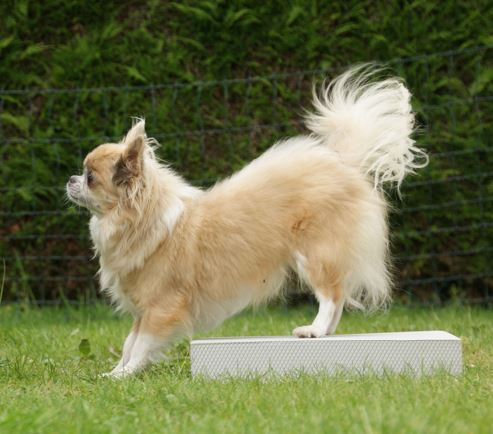
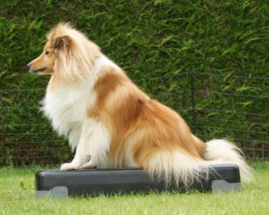
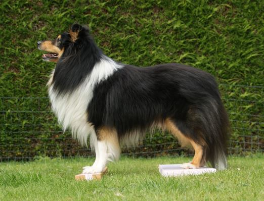
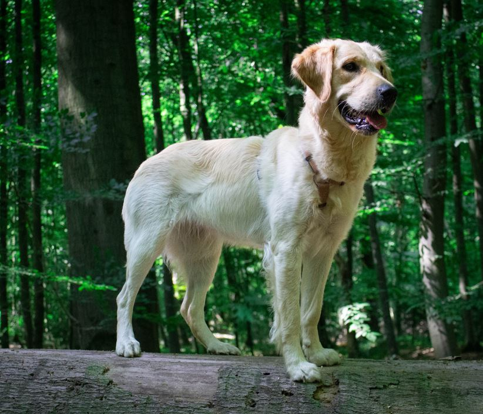
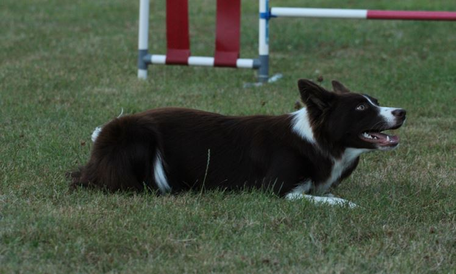

6 weken samen werken aan een sterkere, fittere hond
Korte, leuke en effectieve oefeningen die je gewoon thuis kan doen — mét trainingsfiches op maat en een besloten community om elkaar te motiveren.
Alle praktische info over de challenge op een rijtje.
Een 6 weken durend programma waarbij jij en je hond samen werken aan kracht, balans en coördinatie. Elke week krijg je nieuwe oefeningen, telkens met een duidelijke trainingsfiche: hoe je de oefening uitvoert, waar je op moet letten, en 3 niveaus (Easy, Standard, Challenge).
Al het lesmateriaal staat in Google Classroom, de community leeft in de Facebookgroep. Beide worden toegankelijk na inschrijving en ontvangst van betaling.
De challenge duurt 6 weken en start op [startdatum invullen].
In de instructievideo's zetten deze vijf hun beste beentje voor om je stap voor stap door elke oefening te gidsen.

Yuna is een chihuahua van 7,5 jaar. Op 4,5 jaar heb ik haar geadopteerd. Ze is verzot op fitnessen en laat zich niet tegenhouden door haar gestalte.

Uri is een sheltie van 5 jaar. Ze heeft haar brevet van gehoorzaamheid gehaald en is actief in agility waar ze echt verzot op is. Ze houdt van een uitdaging en zal je vlug duidelijk maken wanneer het voor haar niet snel genoeg gaat.

Raiko is een sheltie van 8 jaar. Hij heeft zijn brevet van gehoorzaamheid gehaald en is actief in agility. Hij houdt wel van wat denkwerk als het maar niet te spannend is. Het meest geniet hij van een lange wandeling waarop hij zoveel mogelijk kan snuffelen.

Milo is een golden retriever (mix?) van 1 jaar. Zij is een pleeghondje dat sinds 30 juni deel uitmaakt van onze roedel. De wereld is voor haar nog super spannend, waarin veel te ontdekken valt, maar ze is super slim en leert dan ook heer graag en heel snel.

Korte introductie: leeftijd, ras, karakter.
Een kleine correcte beweging is waardevoller dan een grote ongecontroleerde beweging. Kijk eerst. Corrigeer later.
Schrijf je in en start binnenkort met jouw hond aan de Winter Fit Challenge.
Schrijf je in⚠️ De oefeningen zijn algemene richtlijnen en vervangen geen diergeneeskundig advies. Raadpleeg bij twijfel, blessures of chronische aandoeningen (zoals heupdysplasie) eerst een dierenarts. Je voert de oefeningen uit op eigen risico.